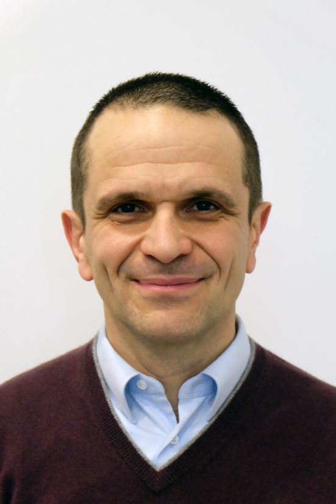

SQLBI
La risorsa di riferimento mondiale su DAX, Power BI e modellazione dati. Articoli, corsi e video di Marco Russo e Alberto Ferrari.

Responsabile Vendite Italia · Business Intelligence · Milano
Figlio d'arte, mi sono sempre occupato di vendite ricoprendo ogni ruolo: dalla figura di jolly fino a quella di Capo Rete Italia. Il campo è il mio habitat naturale, ma nel 2021 ho avuto un incontro che ha cambiato tutto: Power BI. Ne sono rimasto folgorato.
Da allora mi occupo anche di Business Intelligence come Project Manager e come utilizzatore, sviluppando modelli semantici e report per tutta l'azienda. Oggi coordino un formidabile team di Area Manager e, in parallelo, costruisco gli strumenti con cui leggiamo i dati del business.
Il mio lavoro è un viaggio bellissimo tra campo e dati. Per collaborazioni o scambi, scrivimi su LinkedIn.